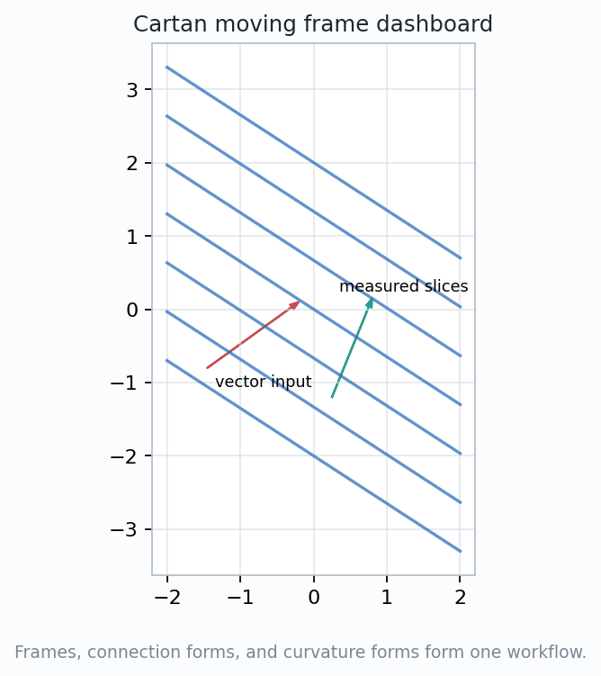
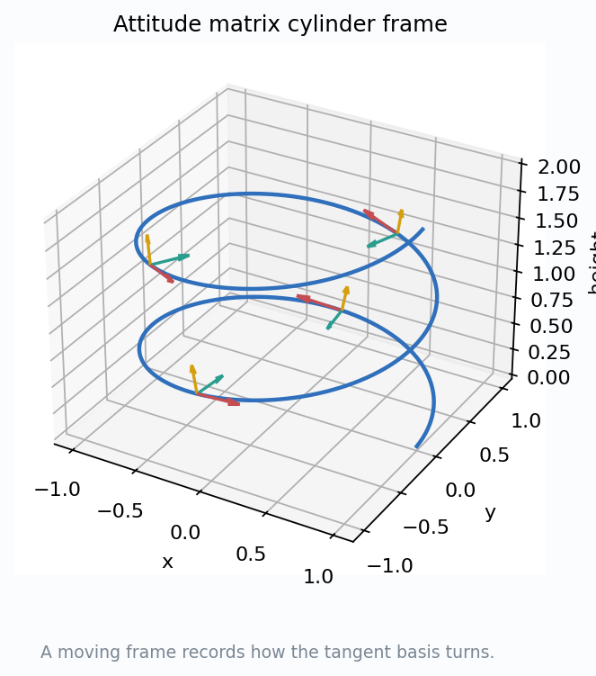
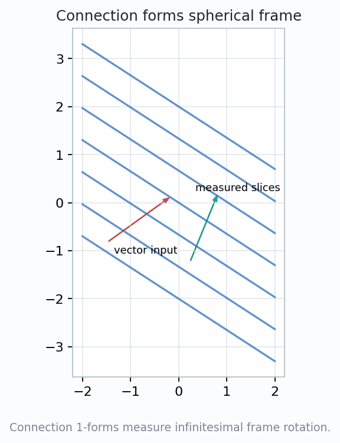
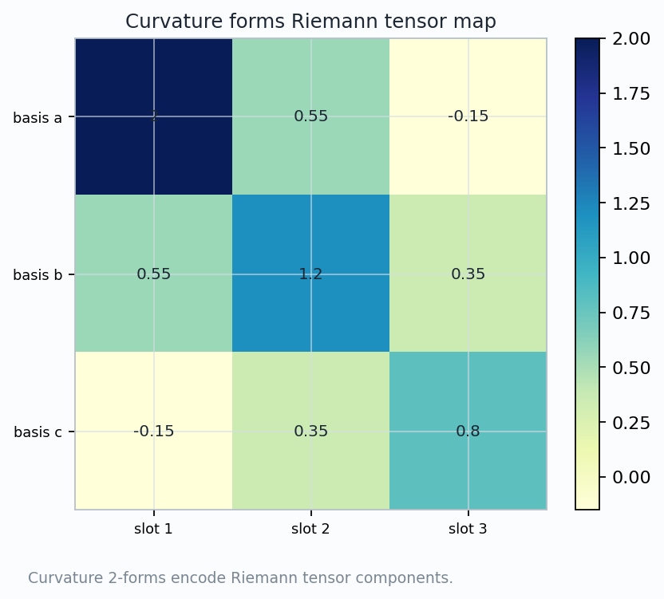
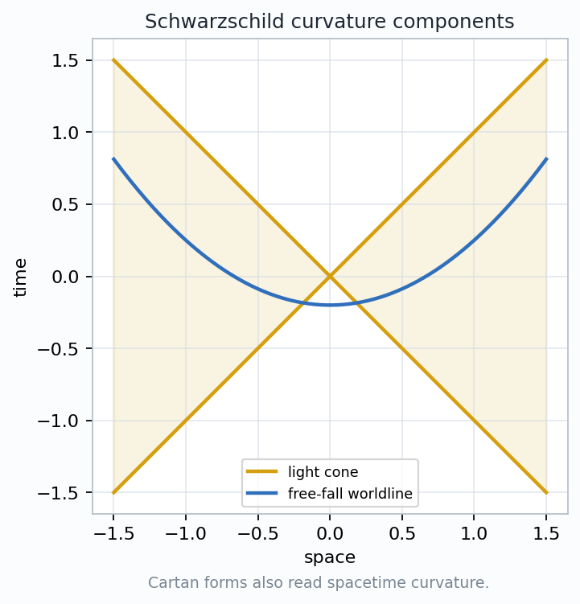

Cartan's exterior calculus rebuilds the subject from local measuring devices: coframes, connection 1-forms, curvature 2-forms, and integrals.
How can forms carry the metric, connection, curvature, and topology in one coordinate-flexible language?
$$\theta^i \longrightarrow \omega^i{}_j \longrightarrow \Omega^i{}_j \longrightarrow \int K\,dA$$
Coframes measure, connection forms turn frames, structure equations detect compatibility, curvature forms encode tensors, and Gauss-Bonnet totals the curvature.


Choose local vectors \(e_1,\ldots,e_n\) and dual 1-forms \(\theta^1,\ldots,\theta^n\):
$$\theta^i(e_j)=\delta^i_j,\qquad g=\sum_i \theta^i\otimes\theta^i.$$
A coframe can be adapted to a surface, sphere, cylinder, or spacetime observer even when coordinates are awkward.
The columns of an attitude matrix store frame directions. Its differential records how the frame changes from point to point.
Coordinates label points. Coframes measure tangent inputs. Confusing those roles hides where the metric enters.
$$\nabla e_i=\sum_j \omega_i{}^j\,e_j,\qquad \omega_{ij}=-\omega_{ji}.$$
On an oriented surface, one tangent connection form \(\omega^1{}_2\) records rotation inside the tangent plane, while normal forms record bending out of the plane.
A connection form is not curvature yet. It is the local rule for comparing nearby frames; curvature appears when that rule fails to close around a loop.

$$T^i=d\theta^i+\sum_j\omega^i{}_j\wedge\theta^j.$$
For the Levi-Civita connection, \(T^i=0\).
$$\Omega^i{}_j=d\omega^i{}_j+\sum_k\omega^i{}_k\wedge\omega^k{}_j.$$
The term \(\omega\wedge\omega\) records two-step frame changes. It is the correction that makes curvature a geometric 2-form, not a raw derivative table.
Feed the curvature form two tangent directions. The output is the infinitesimal holonomy they enclose.
For a surface frame \(e_1,e_2,e_3\) with \(e_3\) normal, the surface condition is
$$\theta^3=0,\qquad d\theta^3=\theta^1\wedge\omega^3{}_1+\theta^2\wedge\omega^3{}_2=0.$$
first fundamental form from \(\theta^1,\theta^2\)
normal connection forms record bending
\(\Omega^1{}_2=K\,\theta^1\wedge\theta^2\)
derivatives of shape must agree
The surface form equations organize tangent compatibility, symmetry of the second fundamental form, and the Gauss-Codazzi conditions that make metric and bending data fit together.
The coefficient \(K\) in the curvature form is determined by the metric coframe and its connection, so Gaussian curvature is intrinsic.

$$\Omega^i{}_j=\frac12 R^i{}_{jkl}\,\theta^k\wedge\theta^l.$$
In two dimensions there is one independent curvature form:
$$\Omega^1{}_2=K\,\theta^1\wedge\theta^2.$$
$$D\Omega=d\Omega+\omega\wedge\Omega-\Omega\wedge\omega=0.$$
The heatmap should be read as a component ledger: basis pair in, rotation plane out, scalar curvature component recorded.
Exterior calculus does not erase tensors. It groups their antisymmetric slots into the natural measuring object: a 2-form.
$$\int_M \Omega^1{}_2=\int_M K\,dA=2\pi\chi(M).$$
$$\int_M K\,dA+\int_{\partial M}k_g\,ds+\sum_i\alpha_i=2\pi\chi(M).$$
For \(S^2\), \(K=1\), area \(4\pi\), and \(\chi(S^2)=2\). The identity reads \(4\pi=2\pi\cdot2\).

A standard orthonormal coframe has the schematic form
$$\theta^0=\sqrt{1-\frac{2M}{r}}\,dt,\quad \theta^1=\left(1-\frac{2M}{r}\right)^{-1/2}dr,$$
$$\theta^2=r\,d\vartheta,\qquad \theta^3=r\sin\vartheta\,d\varphi.$$
The nonzero curvature forms describe tidal bending of spacetime; their components scale with the mass parameter and radial distance.
The chapter is no longer about surfaces only. Forms give a dimension-independent method for Riemannian and Lorentzian geometry.
Exterior calculus turns differential geometry into measured compatibility.
Given a coframe on a surface, identify the connection form, compute \(\Omega^1{}_2\), and explain what would change under a rotated frame.
coframe
connection
curvature
spacetime
workflow